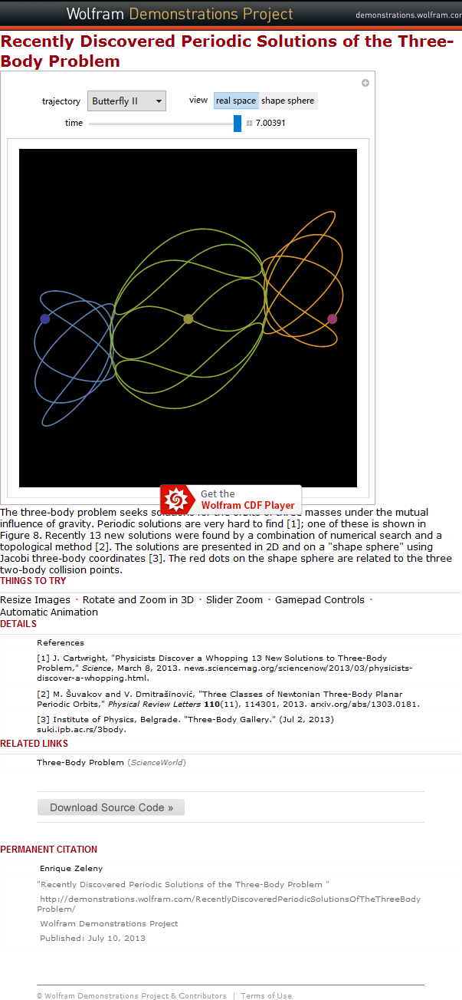

<html>
<head>
</head>
<body>
<script type="text/javascript" src="http://www.wolfram.com/cdf-player/plugin/v2.1/cdfplugin.js"></script>
<script type="text/javascript">
var cdf = new cdfplugin();
cdf.setDefaultContent('<a href="http://www.wolfram.com/cdf-player/"></a>');
cdf.embed('TBP.cdf', 619, 1095);
</script>
</body>
</html>
